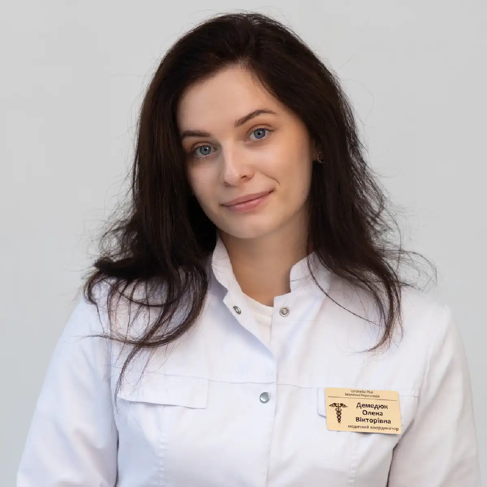

+38(068) 79 72 782
+38(068) 79 72 782Реабілітація алкозалежних
Перевірений метод стабільної ремісії


Безкоштовна консультація, працюємо цілодобово 24/7
Перевірений метод стабільної ремісії

Дата написання: Оновлюється...
Останнє оновлення: Оновлюється...
Реабілітація алкозалежних — це важливий і необхідний етап лікування алкогольної залежності, який допомагає людині не лише відмовитися від спиртного, а й поступово відновити фізичне здоров’я, психоемоційний стан, соціальні зв’язки та здатність жити повноцінним життям без алкоголю. Після детоксикації та зняття гострого стану пацієнту часто потрібна подальша підтримка, тому що фізичне полегшення не усуває психологічну тягу, звичні моделі поведінки, стресові причини вживання та ризик повторного зриву.
Алкоголізм вважається серйозним розладом, при якому людині стає важко контролювати вживання спиртного, навіть якщо алкоголь уже шкодить здоров’ю, сім’ї, роботі, стосункам і якості життя. З часом залежність впливає не лише на організм, а й на мислення, емоції, поведінку, самооцінку та здатність справлятися з труднощами без алкоголю. Саме тому лікування не повинно обмежуватися лише крапельницею, виведенням із запою або медикаментозною допомогою.
Сучасна реабілітація алкозалежних будується на комплексному підході. Вона може включати психотерапію, консультації нарколога, медикаментозну підтримку, роботу з мотивацією, відновлення режиму сну та харчування, участь у групах взаємодопомоги, сімейну підтримку та довгострокову профілактику зривів. Важливу роль відіграють сучасні програми лікування алкоголізму, зокрема підходи за типом програми 12 кроків, які допомагають людині визнати проблему, прийняти підтримку, змінити ставлення до залежності та поступово сформувати стійку тверезість. Головна мета реабілітації — не просто тимчасово зупинити вживання алкоголю, а допомогти людині змінити спосіб життя, навчитися справлятися зі стресом без спиртного, відновити довіру близьких, повернути внутрішню опору та знизити ризик повторного вживання.
Реабілітація алкозалежних — це комплексна програма відновлення після відмови від алкоголю, спрямована не лише на припинення вживання спиртного, а й на глибоку зміну способу життя людини. Головна мета реабілітації — допомогти пацієнту повернутися до тверезого, стабільного та повноцінного життя, відновити фізичний і психоемоційний стан, налагодити стосунки з близькими та навчитися справлятися з труднощами без алкоголю.
Після детоксикації або виведення із запою людині може ставати фізично легше, але сама залежність при цьому не зникає. Зберігається психологічна тяга, звичка вживати у стресових ситуаціях, внутрішнє напруження, почуття провини, тривожність, дратівливість і ризик повторного зриву. Саме тому реабілітація є важливим продовженням лікування, а не додатковою необов’язковою процедурою.
Реабілітація — це не просто перебування в центрі або періодичні консультації спеціаліста. Це системна робота з причинами залежності, внутрішніми переживаннями, поведінкою, мисленням, оточенням і звичками. У процесі відновлення людина вчиться розуміти, чому вона вживала алкоголь, які ситуації провокували бажання випити і які нові способи поведінки допомагають зберігати тверезість. Під час реабілітації пацієнт поступово вибудовує здоровий режим дня, відновлює сон, харчування, фізичну активність та емоційну рівновагу. Велика увага приділяється роботі зі стресом, контролю емоцій, профілактиці зривів і формуванню нових звичок. Людина вчиться уникати небезпечних ситуацій, відмовлятися від алкоголю в компанії, вибудовувати особисті межі та знаходити здорові способи відпочинку, спілкування й відновлення.
Після детоксикації або виведення із запою фізичний стан людини справді може помітно покращитися: зменшується інтоксикація, нормалізується самопочуття, відновлюється сон, знижується слабкість і навантаження на організм. Однак важливо розуміти, що зняття гострого стану не означає повного позбавлення від алкогольної залежності. Детоксикація допомагає очистити організм і полегшити симптоми, але психологічна тяга до алкоголю часто зберігається.
Після припинення вживання людина може стикатися з тривогою, дратівливістю, внутрішньою порожнечею, безсонням, емоційним напруженням, перепадами настрою та сильним бажанням знову випити. Іноді алкоголь сприймається як звичний спосіб розслабитися, зняти стрес, забути про проблеми або впоратися з неприємними емоціями. Якщо не працювати з цими станами, ризик повторного вживання залишається високим, навіть якщо людина щиро хоче зберегти тверезість.
Саме тому реабілітація є важливим продовженням лікування алкогольної залежності. Вона допомагає закріпити результат детоксикації, знизити ймовірність зриву та поступово сформувати стійкі навички життя без алкоголю. У процесі відновлення людина отримує підтримку спеціалістів, безпечне середовище, чітку структуру дня та розуміння, як справлятися з тягою, стресом і складними ситуаціями без спиртного. На етапі реабілітації пацієнт починає не просто утримуватися від алкоголю, а глибше змінювати мислення, поведінку та ставлення до залежності.
Головна мета реабілітації — допомогти людині зберегти тверезість і поступово відновити повноцінне життя без алкоголю. Важливо не лише припинити вживання спиртного, а й розібратися, чому алкоголь зайняв значуще місце в житті пацієнта. Для однієї людини він міг стати способом зняти стрес, для іншої — втечею від тривоги, самотності, болю, сімейних конфліктів або внутрішнього напруження. Поки ці причини залишаються без уваги, ризик повернення до вживання зберігається.
Реабілітація допомагає людині не просто відмовитися від алкоголю на певний час, а змінити ставлення до себе, своїх емоцій, проблем і звичок. У процесі відновлення пацієнт вчиться жити без спиртного, справлятися з труднощами більш здоровими способами, вибудовувати новий режим дня та поступово повертати контроль над своїм життям. До основних завдань реабілітації належать зниження тяги до алкоголю, стабілізація емоційного стану, робота з тривожністю, дратівливістю, стресом і відчуттям внутрішнього напруження. Також важливе місце займає профілактика зривів, формування нових звичок, відновлення стосунків із сім’єю, повернення соціальної активності, покращення самооцінки та розвиток відповідальності за своє одужання.
Реабілітація алкозалежних зазвичай проходить поетапно, тому що відновлення після алкогольної залежності потребує часу, послідовності та комплексного підходу. Неможливо за один день усунути фізичні наслідки вживання, психологічну тягу, звичні моделі поведінки та соціальні проблеми, які формувалися місяцями або роками. Тому програма реабілітації будується так, щоб людина поступово переходила від стабілізації стану до глибокого внутрішнього відновлення та повернення до повноцінного життя.
Перед початком реабілітації багатьом пацієнтам потрібна детоксикація, особливо якщо людина перебуває в запої, нещодавно вживала велику кількість алкоголю або має виражені симптоми алкогольної інтоксикації. У такому стані організм перевантажений продуктами розпаду спиртного, порушується робота нервової системи, серця, печінки, шлунково-кишкового тракту, погіршується сон і загальне самопочуття. Тому перед глибокою психологічною роботою важливо спочатку стабілізувати фізичний стан пацієнта.
Детоксикація може бути необхідна при запої, алкогольній інтоксикації, абстинентному синдромі, сильній слабкості, тривожності, треморі, безсонні, нудоті, блюванні, стрибках тиску, прискореному серцебитті та загальному виснаженні організму. Лікар оцінює стан пацієнта, враховує тривалість вживання, наявність хронічних захворювань, скарги та можливі ризики. Після цього підбирається індивідуальна схема допомоги, спрямована на зниження токсичного навантаження, відновлення водно-сольового балансу, підтримку внутрішніх органів і полегшення симптомів.
Головне завдання детоксикації — вивести людину з гострого стану та підготувати її до подальшого лікування. Коли зменшується інтоксикація, покращується сон, знижується тривожність і стабілізується самопочуття, пацієнту стає легше сприймати допомогу спеціалістів і включатися в процес реабілітації. На тлі тяжкого фізичного стану людині складно працювати з психологічними причинами залежності, тому детоксикація часто стає першим етапом відновлення.
Психологічна допомога — одна з ключових частин реабілітації. Алкогольна залежність часто пов’язана зі стресом, тривожністю, депресією, внутрішнім напруженням, сімейними конфліктами, почуттям провини, самотністю або травматичним досвідом.
Під час роботи з психологом або психотерапевтом людина вчиться розуміти, які емоції та ситуації провокують вживання. Спеціаліст допомагає знайти нові способи справлятися зі стресом, вибудовувати межі, відновлювати самооцінку та поступово змінювати ставлення до алкоголю. Психотерапія допомагає не просто відмовитися від спиртного на певний час, а сформувати стійку внутрішню опору. Це особливо важливо для пацієнтів, які раніше використовували алкоголь як спосіб розслабитися, заснути, забути про проблеми або втекти від емоційного болю.
Вартість реабілітації алкозалежних починається від 15000 грн.
| Популярні послуги | Ціна |
|---|---|
| Консультація нарколога | Від 1500 грн |
| Крапельниця від алкоголю | Від 2199 грн |
| Виведення з запою вдома | Від 2199 грн |
| Кодування від алкоголізму | Від 6000 грн |
Сучасні програми лікування алкоголізму зазвичай поєднують кілька напрямів: медичну допомогу, психотерапію, медикаментозну підтримку, сімейну роботу, профілактику зривів і групи взаємодопомоги. NIAAA зазначає, що лікування алкогольного розладу може включати поведінкову терапію, схвалені лікарські засоби та групи взаємної підтримки, а також поєднання цих підходів. До сучасних програм належать індивідуальна терапія, групова терапія, когнітивно-поведінковий підхід, мотиваційне консультування, сімейна терапія, програми профілактики зриву, амбулаторна реабілітація, стаціонарна реабілітація та програми взаємодопомоги. Вибір залежить від стану пацієнта, стадії залежності, мотивації, наявності запоїв, психоемоційного стану та підтримки близьких.
Програма 12 кроків — один із найвідоміших підходів у відновленні від алкогольної залежності. Вона заснована на поетапній роботі над визнанням проблеми, прийняттям допомоги, аналізом своєї поведінки, відновленням стосунків, особистою відповідальністю та підтримкою людей, які також проходять шлях тверезості.
Важлива особливість програми 12 кроків — групова підтримка. Людина бачить, що вона не одна, може відкрито говорити про труднощі, отримувати досвід інших учасників і поступово зміцнювати мотивацію до тверезого життя. Такий формат особливо корисний після основного курсу лікування, коли пацієнту потрібна довгострокова підтримка та безпечне тверезе оточення. Існують також професійні підходи, пов’язані з 12-кроковою моделлю, наприклад Twelve-Step Facilitation. Це структурована терапевтична методика, яка допомагає людині включитися в 12-крокові спільноти та активніше брати участь у відновленні.
Програма 12 кроків допомагає пацієнту не залишатися сам на сам із залежністю. Після виходу із запою, детоксикації або кодування людина може відчувати розгубленість, тривогу, страх зриву та нерозуміння, як жити далі без алкоголю. Група підтримки допомагає пройти цей період спокійніше. Участь у програмі формує почуття відповідальності, дисципліну, чесність перед собою та розуміння, що відновлення — це тривалий процес. Пацієнт вчиться визнавати свої слабкі місця, просити про допомогу, аналізувати помилки та поступово вибудовувати нове тверезе життя. При цьому програма 12 кроків не обов’язково має бути єдиним методом. Найбільш стійкий результат часто досягається при поєднанні групової підтримки, психотерапії, спостереження у нарколога, медикаментозної допомоги та сімейної підтримки.
Індивідуальна психотерапія допомагає глибше розібратися з особистими причинами залежності. На консультаціях пацієнт може працювати з тривожністю, почуттям провини, образами, страхами, травматичним досвідом, низькою самооцінкою та внутрішніми конфліктами. Такий формат особливо важливий для людей, яким складно відкрито говорити в групі або які мають тяжкі особисті переживання. Індивідуальна робота допомагає безпечно розкривати проблему та поступово змінювати ставлення до себе, стресу й алкоголю.
Групова терапія допомагає людині відчути підтримку та побачити, що зі схожими труднощами стикаються інші люди. У групі пацієнти вчаться говорити про свої переживання, ділитися досвідом, отримувати зворотний зв’язок і зміцнювати мотивацію до тверезості. Групова робота знижує почуття самотності та сорому, яке часто супроводжує алкогольну залежність. Вона допомагає пацієнту поступово відновлювати довіру до людей і вчитися будувати здорове спілкування без алкоголю.
Алкогольна залежність впливає не лише на саму людину, а й на всю сім’ю. Близькі часто стикаються з тривогою, образами, недовірою, конфліктами, співзалежністю та емоційним виснаженням. Тому сімейна терапія може бути важливою частиною реабілітації. На сімейних консультаціях родичі вчаться правильно підтримувати пацієнта, не провокувати конфлікти, не посилювати почуття провини та не брати на себе відповідальність за залежність іншої людини. Це допомагає створити спокійнішу та безпечнішу атмосферу для відновлення.
Профілактика зриву — один із головних елементів реабілітації. Після лікування людина може зіткнутися із ситуаціями, які викликають бажання випити: стрес, конфлікти, самотність, втома, свята, старе оточення або емоційні переживання. Під час реабілітації пацієнт вчиться заздалегідь розпізнавати такі ситуації та розуміти, як діяти. Важливо мати план: кому зателефонувати, куди звернутися, як переключитися, як уникнути небезпечної компанії та як пережити сильну тягу без вживання алкоголю. Профілактика зриву допомагає людині не сприймати тверезість як тимчасове обмеження, а поступово робити її частиною нового життя.
Після проходження основного курсу реабілітації людині важливо повернутися до нормального життя. Це може включати відновлення роботи, навчання, спілкування з сім’єю, вирішення побутових питань, пошук нових інтересів і формування здорового оточення. Соціальна адаптація допомагає пацієнту відчути впевненість і сенс тверезого життя. Людина поступово вчиться отримувати задоволення без алкоголю, будувати плани, відновлювати довіру близьких і брати відповідальність за своє майбутнє.
Стаціонарна реабілітація підходить пацієнтам, яким потрібне безпечне середовище, постійна підтримка спеціалістів і тимчасове віддалення від звичного оточення. Такий формат особливо актуальний при тривалій залежності, частих зривах, відсутності підтримки вдома або вираженій психологічній нестабільності. У стаціонарі пацієнт перебуває під наглядом спеціалістів, дотримується режиму, відвідує консультації та поступово відновлює фізичний і емоційний стан. Закрите середовище допомагає знизити ризик вживання та зосередитися на лікуванні.
Амбулаторна реабілітація підходить тим пацієнтам, які можуть жити вдома, але регулярно відвідують лікаря, психолога, групи підтримки або терапевтичні заняття. Такий формат зручний для людей, які зберігають роботу, сімейні обов’язки або вже пройшли основний етап лікування. Амбулаторне відновлення допомагає підтримувати тверезість у звичайному житті. Пацієнт одразу вчиться застосовувати нові навички в реальних умовах: удома, на роботі, в сім’ї та в спілкуванні з оточенням.
Нарколог допомагає оцінити стан пацієнта, визначити ступінь залежності, підібрати медикаментозну підтримку, провести детоксикацію, підготувати до кодування або направити на реабілітацію. Також лікар контролює відновлення та допомагає знизити ризик ускладнень. Допомога нарколога особливо важлива, якщо у пацієнта є запої, абстинентний синдром, виражена тяга, тривожність, безсоння, тремор, стрибки тиску або погіршення загального стану. Самостійні спроби різко відмовитися від алкоголю після тривалого вживання можуть бути небезпечними, тому лікування має проходити під контролем спеціаліста.
Медикаментозна підтримка може використовуватися для зниження тяги до алкоголю, стабілізації сну, зменшення тривожності, відновлення нервової системи та профілактики зриву. Ліки підбираються тільки лікарем з урахуванням стану пацієнта, протипоказань і супутніх захворювань. Медикаменти не замінюють психотерапію та реабілітацію, але можуть бути важливою частиною комплексного лікування. Вони допомагають пацієнту легше пройти складний період відновлення та знизити ризик повторного вживання.
Вибір програми реабілітації залежить від стану пацієнта, тривалості залежності, наявності запоїв, мотивації, психоемоційного стану, сімейної ситуації та попереднього досвіду лікування. Одним пацієнтам підходить стаціонарна програма, іншим — амбулаторна підтримка, третім — поєднання психотерапії, нарколога та програми 12 кроків. Важливо, щоб програма була індивідуальною, безпечною та комплексною. Хороша реабілітація не обмежується лише забороною на алкоголь. Вона допомагає людині зрозуміти причини залежності, відновити здоров’я, навчитися жити тверезо та отримати підтримку після завершення основного лікування.
Сім’я відіграє велику роль у відновленні. Близькі можуть підтримати людину, допомогти їй дотримуватися рекомендацій, створити спокійну атмосферу та мотивувати продовжувати лікування. Однак важливо, щоб підтримка не перетворювалася на тиск, контроль, звинувачення або постійні нагадування про минуле. Родичам також може знадобитися консультація спеціаліста. Психолог допомагає сім’ї зрозуміти, як правильно спілкуватися із залежною людиною, як не провокувати зрив, як не посилювати співзалежність і як зберегти власний емоційний стан.
Життя після реабілітації — це новий етап, який потребує уваги та поступовості. Людині важливо продовжувати піклуватися про себе, дотримуватися режиму, уникати старого оточення, відвідувати групи підтримки або консультації, якщо це рекомендовано спеціалістом. Тверезість стає стійкішою, коли у пацієнта з’являються нові цілі, здорове оточення, підтримка, інтереси та розуміння, навіщо він продовжує відновлення. Реабілітація допомагає не просто відмовитися від алкоголю, а побудувати життя, у якому спиртне більше не є способом справлятися з труднощами.
Цілодобова допомога може знадобитися при запої, алкогольній інтоксикації, абстинентному синдромі, сильній тривожності, безсонні, треморі, блюванні, слабкості, стрибках тиску або неможливості самостійно припинити вживання. У таких випадках важливо не чекати погіршення стану, а звернутися до нарколога.
Своєчасна медична допомога дозволяє стабілізувати стан, знизити ризик ускладнень і визначити подальший план лікування. Після зняття гострого стану пацієнту може бути рекомендована реабілітація, психотерапія, програма 12 кроків, медикаментозна підтримка або комплексна програма відновлення.
Зателефонуйте нам за телефоном: +38(050-021-69-57)

Статтю перевірено експертом
Могучев Станіслав
Лікар-терапевт, ординатор
Можливо цікава стаття:
Янтарна кислота, Бетаргін та Ентеросгель при алкогольної інтоксикації

Так, ми суворо дотримуємося повної конфіденційності на всіх етапах лікування. Інформація про пацієнта, діагноз та проходження терапії не передається третім особам. Звернення до нас не тягне за собою постановку на облік. Ви можете бути впевнені у безпеці та анонімності.
Програма лікування розробляється індивідуально після консультації з фахівцем. Враховуються вид залежності, її тривалість, фізичний та психологічний стан пацієнта. Такий підхід дозволяє підвищити ефективність терапії та знизити ризик зриву. Ми не використовуємо шаблонні рішення.
Так, ми супроводжуємо пацієнтів і після основного курсу лікування. Проводяться консультації, рекомендації щодо адаптації та профілактики рецидивів. За потреби можлива подальша психологічна підтримка. Це допомагає зберегти результат та повернутися до повноцінного життя.
Анонимно

Ну в хлопців просто золоті руки й світла голова, мене капали Олексій та Владислав, буквально за декілька сеансів я наче заново народився, до цього пив більше 3х тижнів, не міг зупинитись, дуже радий що знайшов саме цих спеціалістів, всім рекомендую
Анонимно
В течение нескольких лет я злоупотреблял алкоголь, что привело к увольнению с работы и вызвало у меня мысли о суициде. Понимая, что такой образ жизни неприемлем, я обратился за помощью в клинику “Амбрела”. Здесь я смог преодолеть свою зависимость от спиртного благодаря заботливым и опытным врачам, а также эффективной системе лечения. Спустя более года я полностью избавился от желания употреблять алкоголь, и теперь моя жизнь вернулась в норму. Я даже не приближаюсь к спиртному! Благодарю врачей клиники “Амбрела” за их помощь и заботу.
Анонимно
Я обращался за помощью в различные клиники, пытаясь избавиться от своей зависимости от алкоголя, но без особых успехов. Никак не мог справиться с желанием прибегнуть к бутылке, пока друг не посоветовал мне обратиться в центр “Амбрелла”. Я записался на прием и был поражен заботливым отношением к пациентам. Уже прошло два года, и теперь я смотрю на алкоголь с абсолютной равнодушием, активно занимаюсь спортом и улучшил отношения в семье. Благодаря центру “Амбрелла” моя жизнь была спасена от алкогольной зависимости!
Анонимно
Хочу выразить свою благодарность врачам из центра алкоголизма “Амбрела” за то, что они буквально спасли мою жизнь. В течение последнего года я сильно увлекался питьем, и все это привело к катастрофическим последствиям. Хотя я ходил на терапевтические сеансы, но безрезультатно. Тогда я нашел адрес клиники “Амбрела” в интернете, изучил отзывы и информацию о центре, и записался на прием. Там мне сразу предложили методику лечения, которая помогла не только справиться с физической ломкой, но и психической зависимостью от алкоголя. Не буду распространяться, скажу только одно - после пребывания в этой клинике я стал другим человеком, и навсегда забыл, что такое привкус алкоголя. Больше меня не тянет на это! Я искренне верю, что в центре “Амбрела” трудятся настоящие целители душ!
Анонимно
После сложного развода мой сын начал подавлять свою обиду и горе употреблением алкоголя. Он старался скрывать это от меня, но я, как мать, почувствовала, что что-то не так. В конечном итоге, ситуация стала критической. Моя знакомая посоветовала мне обратиться в клинику “Амбрела”. Я была приятно удивлена их работой! Они помогли сыну преодолеть очередной период злоупотребления алкоголем, и с тех пор прошел уже более года, и он совсем не пьет.
Анонимно
Благодаря вашей помощи, моя семья была спасена. Я с трудом уговорила мужа начать лечение, и последний каплей был пьяное ДТП. К счастью, в аварии никто не пострадал, но это был для него сигнал к действию. Он наконец согласился пройти курс лечения на дому, в стационар не хотел ложиться. Лечение было трудным, и были моменты, когда срыв был настолько близок, но благодаря вашему центру Амбрелла мы справились с этим.
Анонимно
Для меня эта клиника стала настоящим спасением! Долгое время я упорно отказывался от лечения, уверен был, что со мной все в порядке. Но к счастью, семья уговорила меня попробовать. И сегодня я чувствую себя невероятно счастливым, осознавая, что мне абсолютно не нужен алкоголь. Огромное спасибо за помощь и поддержку, которые я получил здесь! Я благодарен вам за новую возможность жить полноценной и счастливой жизнью!
Анонимно
Выражаю благодарность ребятам, которые оказали мне помощь и не отвернулись. Уже 10 месяцев я остаюсь чистой. Благодарю за то, что помогли найти новый путь в моей жизни.
Номер телефону:
+380 (68) 797 27 82
+380 (50) 021 69 57
Адресу наркологічного центра вашого міста уточнюйте за
телефоном
Працюємо: Київ, Одеса, Львів, Харків, Дніпро, Запоріжжя,
Черкасах, Чугуєві, Чорноморську, Кам'янському
Telegram: t.me/umbrellaplus
Графік работы: Цілодобово